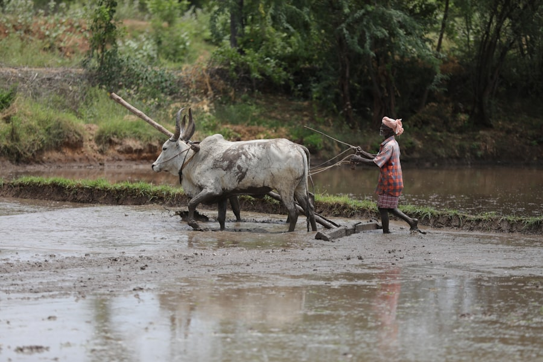
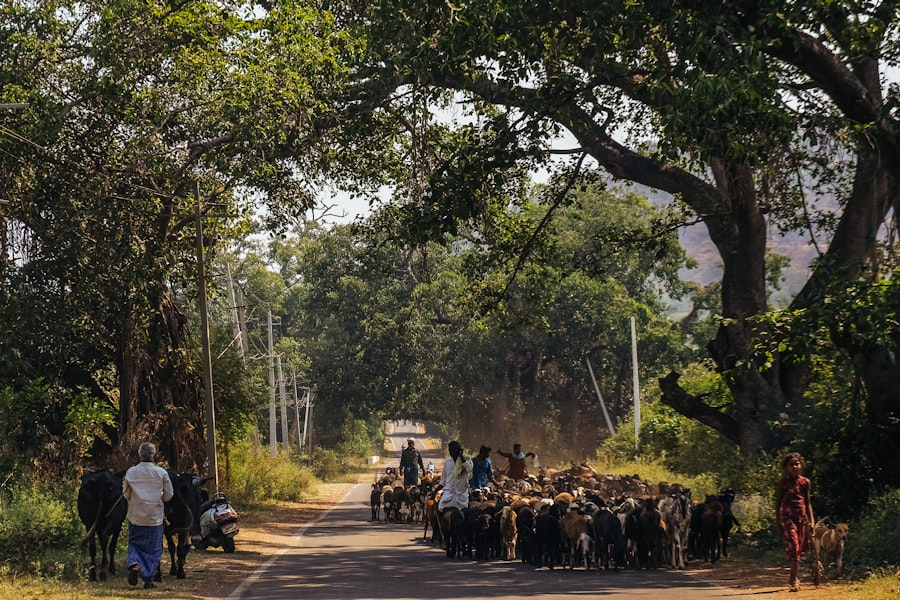
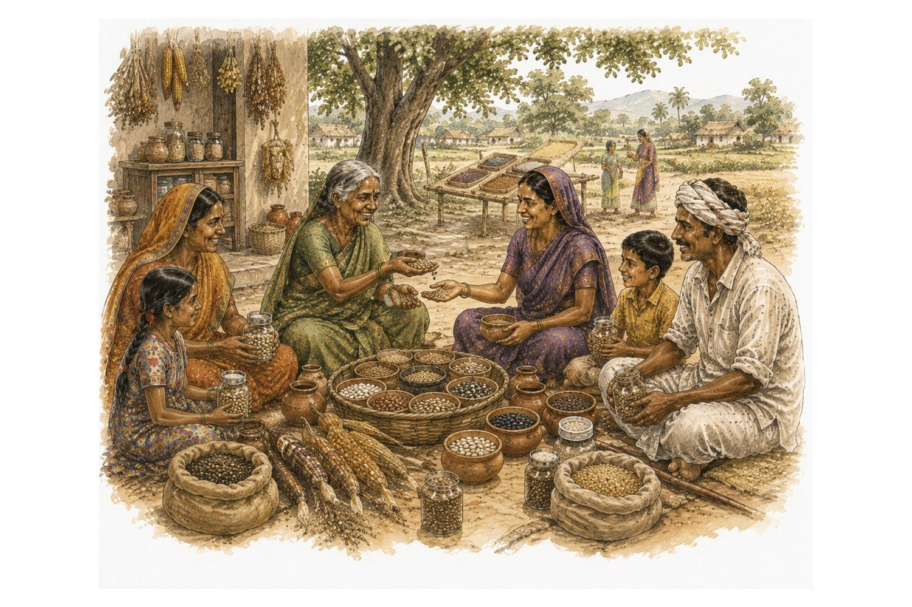

The Promise
of the Commons
Indian Commoner is a forum to which individuals and organisations interested in the current state of common pool resources, from India and other parts of the world, may contribute. The forum is a platform for discussions and exchange of ideas between people from different walks of life.
 Anil Kumar Agarwal1947–2002 · Environmentalist
Anil Kumar Agarwal1947–2002 · Environmentalist
 Anupam Mishra1948–2016 · Gandhian, Author, Journalist, Environmentalist and Water Conservationist
Anupam Mishra1948–2016 · Gandhian, Author, Journalist, Environmentalist and Water Conservationist
 Wangari Maathai1940–2011 · Social, Environmental and Political Activist, first African woman to win the Nobel Peace Prize
Wangari Maathai1940–2011 · Social, Environmental and Political Activist, first African woman to win the Nobel Peace Prize
 Chinua Achebe1930–2013 · Novelist, Poet and Critic
Chinua Achebe1930–2013 · Novelist, Poet and Critic
 E.F. Schumacher1911–1977 · Statistician and Economist
E.F. Schumacher1911–1977 · Statistician and Economist
 Elinor Ostrom1933–2012 · Political Economist and Nobel Prize winner
Elinor Ostrom1933–2012 · Political Economist and Nobel Prize winner
 Garrett James Hardin1915–2003 · Ecologist, coined the phrase "Tragedy of the Commons"
Garrett James Hardin1915–2003 · Ecologist, coined the phrase "Tragedy of the Commons"
 Guru Das Agrawal1932–2018 · Environmentalist, Engineer, Religious Leader, Monk, Environmental Activist and Professor
Guru Das Agrawal1932–2018 · Environmentalist, Engineer, Religious Leader, Monk, Environmental Activist and Professor
 J.C. Kumarappa1892–1960 · Indian Economist, close associate of Mahatma Gandhi
J.C. Kumarappa1892–1960 · Indian Economist, close associate of Mahatma Gandhi
 Madeleine Slade (Mirabehn)1892–1982 · Supporter of the Indian Independence Movement
Madeleine Slade (Mirabehn)1892–1982 · Supporter of the Indian Independence Movement
 Mahasweta Devi1926–2016 · Writer and Activist
Mahasweta Devi1926–2016 · Writer and Activist
 Mohandas Karamchand Gandhi1869–1948 · Indian Lawyer, Anti-colonial Nationalist and Political Ethicist
Mohandas Karamchand Gandhi1869–1948 · Indian Lawyer, Anti-colonial Nationalist and Political Ethicist
 Munshi Premchand1880–1936 · Indian Writer, famous for modern Hindustani literature
Munshi Premchand1880–1936 · Indian Writer, famous for modern Hindustani literature
 N.S. Jodha1937–2020 · Agricultural Economist, influential writer on Commons
N.S. Jodha1937–2020 · Agricultural Economist, influential writer on Commons
 Pyotr Kropotkin1842–1921 · Russian Anarchist, Philosopher and Naturalist
Pyotr Kropotkin1842–1921 · Russian Anarchist, Philosopher and Naturalist
 Rachel Carson1907–1964 · Marine Biologist, Author and Conservationist
Rachel Carson1907–1964 · Marine Biologist, Author and Conservationist
 Sundar Lal Bahuguna1927–2021 · Indian Environmentalist, Chipko Movement leader
Sundar Lal Bahuguna1927–2021 · Indian Environmentalist, Chipko Movement leader
 Vinoba Bhave1895–1982 · Advocate of Non-violence and Human Rights
Vinoba Bhave1895–1982 · Advocate of Non-violence and Human Rights
Recent Topics

What Are Commons
We live in a world today where it has become intuitive to think of property as something owned and controlled by individuals, corporate bodies and governments.
Read More
Who Is a Commoner
While the significance and impact of common property institutions is most prominent amongst communities living in rural areas
Read More
Purpose of the 'Indian Commoner'
This forum on the commons seeks to encourage conversations around the way human societies and communities can control
Read MoreResources and Downloads
To know more about Commons, do visit the curated resource section.

Reclaiming the Credit Commons

Knowledge Forum with Prof Elinor Ostrom
Meet Commoners all over the Country
Click on your state to see the discussions and participate in the conversations on commons in India!
Andhra Pradesh
Jharkhand
Karnataka
Rajasthan
Maharashtra
Madhya Pradesh
Gujarat
Kerala
Odisha
Punjab
Arunachal Pradesh
Assam
Chhattisgarh
Meghalaya
Nagaland
Uttarakhand
Uttar Pradesh
Join Us
 Purnendu Kavoori — Forum Coordinator
Purnendu Kavoori — Forum Coordinator